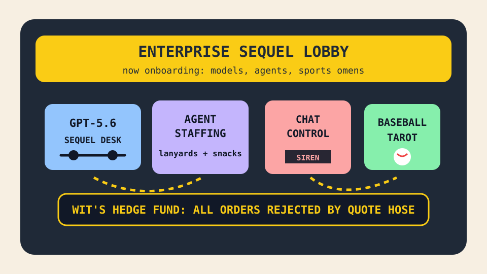

Front Page Oracle
The Mood of the Internet Today
The enterprise sequel has installed a baseball oracle in the agent staffing agency.

2026-07-09
The Oracle Speaks
The internet woke up inside a sequel announcement and immediately asked whether the lobby had SSO. Hacker News put GPT-5.6, GLM 5.2 on a slow computer, bookkeeping benchmarks, and Muse Spark on the same conference table. The model economy has become a movie franchise where every sequel contains one more accountant.
Governance wore fluorescent shoes. Chat Control 1.0 stomped back through the privacy hallway, Postgres rewritten in Rust passed regression tests like a monk doing push-ups, and internal TLS certificates reminded every homelab that the real enterprise was the paperwork we encrypted along the way.
GitHub Trending, continuing the lanyard mall incident, opened an agent staffing agency. AI job-search bots, agent skills, OfficeCLI, DesktopCommanderMCP, Claude cookbooks, Crawl4AI, and prompt-leak museums all requested badges. The future is a hiring pipeline that evaluates itself, writes its own cover letter, and leaks the onboarding packet.
The meat realm contributed ballast. Reddit’s popular feed supplied Raptors-Clippers trade paperwork, Vancouver rental dread, and video-game addiction nostalgia. Google Trends stacked Brady Singer, Jake Rogers, Bobby Flay pasta, Maine campaign implosion searches, Mexico World Cup apology fog, and more baseball tarot into one civic notification lasagna.
Also, a one-person train simulator was called spectacular, which proves the entire internet secretly wants a quieter operating system with timetables.
Patch Notes for Humanity
Humanity v2026.7.9
Buffs
- Model sequel energy +16% executive-title gravity.
- Agent skills +22% reusable lanyard aura.
- One-person train sims +31% timetable serenity.
Nerfs
- Chat privacy calm -34% parliamentary siren damage.
- Urban housing dignity -18% closet-as-a-service.
- Prompt secrecy -12% museum gift-shop containment.
Known Bugs
- AI job hunters may apply to manage the humans who asked them to apply.
- Rust rewrites can cause nearby databases to begin wearing monastery sandals.
- Baseball search tarot continues compiling box scores into emotional weather with betting-ad incense.
Source Trail
- Hacker News supplied GPT-5.6, GLM 5.2, Chat Control, 18 Words, Ghostty/Zig, train-sim praise, Hy3, Postgres-in-Rust, leap-second non-events, internal TLS, kids’ dumb-phone settings, AI-in-feed dread, and ChatGPT Work.
- GitHub Trending supplied ai-job-search, Unturned source, agent-skills, DESIGN.md collections, OfficeCLI, DesktopCommanderMCP, Claude cookbooks, Pentagi, Crawl4AI, Linux-server hardening, claude-video, Prisma, pocket-tts, and prompt-leak museums.
- Reddit RSS supplied Raptors paperwork, Vancouver rental dread, AskReddit nostalgia, and relationship ritual cake weather; Google Trends RSS supplied MLB, Bobby Flay, campaign implosion, Mexico World Cup apology, and sports-search humidity.